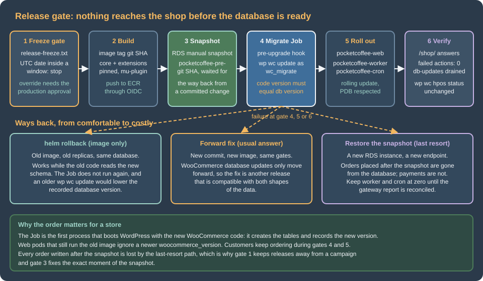

Cloud: Releases and Database Updates
|
This content was generated with the assistance of AI and should be verified against the official documentation before being relied on in production. |
This page was written against WooCommerce 11.2.1 (2026-10-09) on WordPress 7.1.4 (the security release of 2026-10-28; the WordPress pages of this site use 7.1.3 as their baseline), PHP 8.4 for the container image, MariaDB 11.8 or MySQL 8.4 on Amazon RDS, Kubernetes 1.36 or 1.37 on Amazon EKS and Action Scheduler 4.1.0, which WooCommerce 11.2.1 bundles. It was checked on 2026-10-29. It names no prices: the cost drivers it mentions (snapshot storage, a second database copy for a restore drill) are things to measure, not figures to copy.
The WordPress page Releases, Upgrades and
Autoscaling on Kubernetes already explains the release pipeline: an image tagged with the commit, a helm upgrade with
--rollback-on-failure, OIDC instead of access keys, a pre-upgrade hook Job, a snapshot first, and the limits of
helm rollback. This page does not repeat it; it reuses it and adds what a store changes. The running example is Pocket
Coffee with the names of Cloud: Deployment Overview: cluster
pocketcoffee-prod, namespace pocketcoffee, release pocketcoffee, chart pocketcoffee-woocommerce (helpers pc.*,
built as the lumenpress-wordpress chart of Deploying on EKS with Helm),
ECR repository pocketcoffee/woocommerce, RDS instance pocketcoffee-prod with the users wc_app and wc_migrate, and
the workloads pocketcoffee-web, pocketcoffee-worker, pocketcoffee-cron and pocketcoffee-migrate, in the account
123456789012 and the region eu-west-1.
A store differs from a publishing site in four ways that matter for a release. WooCommerce has a database update routine
of its own that is not wp core update-db and that, by default, runs in the background through Action Scheduler the
moment the first process boots the new code. Extensions are code and schema that you do not control, often paid, often
distributed as a zip. Customers keep placing orders while the schema changes, so every order written after the snapshot is
at stake. And a store has a calendar: the weeks where a bad release costs more than a late one.

The WooCommerce database update routine
WooCommerce keeps two version numbers in wp_options. woocommerce_version is the version of the code that last ran its
installer, and woocommerce_db_version is the version of the data. The code carries a map from versions to lists of
update callbacks, WC_Install::get_db_update_callbacks(); in 11.2.1 it ends with 11.2.0 and 11.2.0-1, and the callbacks
of 11.2.0 are named wc_update_1120_remove_abandoned_cart_recovery, wc_update_11201_migrate_tax_lookup_order_items and
so on (all in includes/wc-update-functions.php). The routine is "run every callback of a version newer than
woocommerce_db_version, then set woocommerce_db_version to the current version". A callback that returns true means
"call me again", which is how the batched callbacks work.
The source of 11.2.1 (read from the plugin zip of wordpress.org, not from the documentation) shows when it runs:
-
On every request, including every WP-CLI command that loads plugins, WooCommerce hooks
WC_Install::check_version()toinitat priority 5. Whenwoocommerce_versionis lower than the code version it callsWC_Install::install():dbDelta()for the schema (create_tables()), options, roles, the version bump, andmaybe_update_db_version(). A lock, the optionwc_installing, keeps two processes from installing at once; a lock older than ten minutes is taken over. -
Since WooCommerce 9.9.0 the database update is automatic: unless the filter
woocommerce_enable_auto_update_dbreturnsfalse,update()schedules one Action Scheduler action per callback with the hookwoocommerce_run_update_callbackin the groupwoocommerce-db-updates, plus a last action,woocommerce_update_db_to_current_version, that stores the newwoocommerce_db_version. The filterwoocommerce_db_update_schedule_delaycan delay the start. When the filter returnsfalse, WooCommerce shows the "Update database" admin notice instead and waits for a person to press the button, or forwp wc update. -
wp wc update(classWC_CLI_Update_Command) computes the callbacks newer thanwoocommerce_db_version, runs them synchronously in a loop, calls each batched callback again until it returnsfalse, and then setswoocommerce_db_version. When nothing is pending it still writes the version and prints "No updates required".
On a cluster that sequence has consequences that a single server hides. The first process to boot the new code does the
schema work and the scheduling, and in a rolling update that is whichever web pod receives a request first, running as the
application user wc_app that, by design, has no ALTER or CREATE privileges (see
Cloud: Database, HPOS and Sessions). The callbacks then
run in whichever worker claims them, mixed with the order emails and webhooks of the shop. And because several of them
touch large tables, they compete with checkout. The cure is the same as for WordPress core: do the work once, in a Job,
before the rollout, as the migration user.
What happens if both run
I tested the combinations on a scratch store (WooCommerce 11.1.0 upgraded to 11.2.1 on WordPress 7.1.4 with PHP 8.4 and MariaDB 11.8, no orders, Action Scheduler 4.1.0), because the interplay is not documented anywhere I could find.
| Sequence | What the queue and the version showed | Consequence |
|---|---|---|
New code boots, automatic update on (default); nobody runs |
Ten actions in the group |
Works only if a worker runs. Until then the shop runs new code on old data. |
Same boot, then |
|
The callbacks ran twice. They are meant to be repeatable, but it is work you did not need. |
New code boots with the filter returning |
|
The behaviour the Job wants. |
Older image (11.1.0) runs |
It printed "No updates required" and wrote |
Never run the update command from an older image; the next forward release would repeat the 11.2.0 callbacks. |
The third row is the design of the Job below: switch the automatic update off for the one process that runs
wp wc update, so the callbacks run exactly once, synchronously, with a database user that may alter tables. The web and
worker pods keep the default, which makes them a safety net: if a release ever reached production without the Job (for
example with migrate.enabled=false), the update would still be queued and run by the workers instead of being forgotten.
The pre-upgrade Job
Three pieces make the Job: a mu-plugin in the image that reads one environment variable, the Job template with the
pc.* helpers, and an ExternalSecret for the migration user’s password. They follow the structure of the WordPress
chart (lp.* helpers become pc.*), so only the store-specific differences are shown.
<?php
/**
* Plugin Name: Pocket Coffee WooCommerce DB update policy
*
* The pre-upgrade Job sets PC_WC_DB_AUTO_UPDATE=0 so that the database update runs once,
* synchronously, through "wp wc update". Web and worker pods do not set it and keep the default.
*/
if ( getenv( 'PC_WC_DB_AUTO_UPDATE' ) === '0' ) {
add_filter( 'woocommerce_enable_auto_update_db', '__return_false' );
}A must-use plugin loads before the regular plugins, so the filter is registered before WooCommerce reads it. The variable
is read with getenv(), which works in the WP-CLI process of the Job; only the Job defines it, so the web and worker
pods keep the safety net.
{{- define "pc.name" -}}pocketcoffee{{- end -}}
{{- define "pc.labels" -}}
app.kubernetes.io/name: {{ include "pc.name" . }}
app.kubernetes.io/instance: {{ .Release.Name }}
app.kubernetes.io/version: {{ .Chart.AppVersion | quote }}
app.kubernetes.io/managed-by: {{ .Release.Service }}
helm.sh/chart: {{ .Chart.Name }}-{{ .Chart.Version }}
{{- end -}}
{{- define "pc.phpImage" -}}
{{ .Values.image.repository }}:{{ required "set image.tag to the git SHA of the release" .Values.image.tag }}
{{- end -}}
{{/* Environment shared by every container that loads WordPress (web, worker, cron, Jobs). */}}
{{- define "pc.envFrom" -}}
- configMapRef:
name: {{ .Release.Name }}-config
- secretRef:
name: {{ .Release.Name }}-secrets
{{- end -}}
{{/* Restrictive container security context. */}}
{{- define "pc.containerSecurity" -}}
allowPrivilegeEscalation: false
readOnlyRootFilesystem: true
runAsNonRoot: true
capabilities:
drop: ["ALL"]
{{- end -}}Source: Helm Docs: Named templates
{{- if .Values.migrate.enabled }}
apiVersion: batch/v1
kind: Job
metadata:
name: {{ .Release.Name }}-migrate
labels:
{{- include "pc.labels" . | nindent 4 }}
annotations:
"helm.sh/hook": pre-upgrade
"helm.sh/hook-weight": "0"
"helm.sh/hook-delete-policy": before-hook-creation,hook-succeeded
spec:
backoffLimit: 0
activeDeadlineSeconds: {{ .Values.migrate.timeoutSeconds }}
ttlSecondsAfterFinished: 3600
template:
metadata:
labels:
app.kubernetes.io/name: {{ include "pc.name" . }}
app.kubernetes.io/instance: {{ .Release.Name }}
app.kubernetes.io/component: migrate
spec:
restartPolicy: Never
serviceAccountName: {{ .Values.serviceAccount.name }}
automountServiceAccountToken: false
securityContext:
fsGroup: 33
seccompProfile:
type: RuntimeDefault
containers:
- name: wc-update
image: {{ include "pc.phpImage" . }}
securityContext:
{{- include "pc.containerSecurity" . | nindent 12 }}
runAsUser: 33
runAsGroup: 33
command: ["sh", "-c"]
args:
- |
set -eu
wp --path=/var/www/html core is-installed
wp --path=/var/www/html core update-db
wp --path=/var/www/html wc update
code_version="$(wp --path=/var/www/html plugin get woocommerce --field=version)"
db_version="$(wp --path=/var/www/html option get woocommerce_db_version)"
echo "WooCommerce code ${code_version}, database ${db_version}"
test "${code_version}" = "${db_version}"
wp --path=/var/www/html wc hpos status
envFrom:
{{- include "pc.envFrom" . | nindent 12 }}
env:
- name: WORDPRESS_DB_USER
value: {{ .Values.database.migrateUser | quote }}
- name: DB_PASSWORD
valueFrom:
secretKeyRef:
name: {{ .Release.Name }}-migrate
key: DB_PASSWORD
- name: PC_WC_DB_AUTO_UPDATE
value: "0"
resources:
requests: { cpu: 250m, memory: 384Mi }
limits: { memory: 768Mi }
volumeMounts:
- name: tmp
mountPath: /tmp
volumes:
- name: tmp
emptyDir: {}
{{- end }}Source: Helm Docs: Chart hooks
{{- if and .Values.migrate.enabled .Values.secrets.enabled }}
apiVersion: external-secrets.io/v1
kind: ExternalSecret
metadata:
name: {{ .Release.Name }}-migrate
labels:
{{- include "pc.labels" . | nindent 4 }}
spec:
refreshInterval: {{ .Values.secrets.refreshInterval }}
secretStoreRef:
kind: ClusterSecretStore
name: {{ .Values.secrets.storeName }}
target:
name: {{ .Release.Name }}-migrate
data:
- secretKey: DB_PASSWORD
remoteRef:
key: {{ .Values.secrets.migrateKey }}
property: MIGRATE_DB_PASSWORD
{{- end }}The values it reads are database.migrateUser: wc_migrate, secrets.migrateKey: pocketcoffee/prod/woocommerce (the JSON
key MIGRATE_DB_PASSWORD holds the password, never the chart) and migrate.timeoutSeconds: 1800. What each step does and
why it is there:
-
core is-installedfails fast when the Job cannot reach the database or the site is not installed. It also loads WordPress with the plugins, so it is the call that boots the new WooCommerce code and runscheck_version(): the schema (dbDelta()) is created here, bywc_migrate, which is the point of using a different user. On the scratch store,wp core is-installedwas enough to bumpwoocommerce_versionand, with the filter off, to queue nothing. -
core update-dbis the WordPress half of the job, for the releases where WordPress itself moved. -
wc updateis the WooCommerce half. Its exit status is the Job’s: theset -eustops the script when a callback throws. -
The comparison of the plugin version with
woocommerce_db_versionis a gate: after a successful update the two are equal (wp wc updatewrites the current code version when it is newer than the last key of the map), so a Job that "succeeded" without moving the version fails here. It would also fail for a development build whose version is not a release number; use release builds in production. -
wc hpos statusprints the order-storage state after the update. Its output goes into the Job’s log, sokubectl logs job/pocketcoffee-migrateshows whether HPOS is still on and whether there are unsynced orders (see HPOS). -
envafterenvFrom: an explicit variable wins over one taken from the ConfigMap, so the Job connects aswc_migratewith the password of the second Secret, while the ConfigMap still supplies host, database name and table prefix.
The script of the Job was run unchanged against the scratch store (an upgrade from 11.1.0 to 11.2.1, output: "Success: 9
update functions completed. Database version is 11.2.1", then "WooCommerce code 11.2.1, database 11.2.1" and the HPOS
status), after helm template rendered it and shellcheck passed.
Things that go wrong
-
The first release has no Secret yet. A hook runs before the new revision’s resources exist, so the ExternalSecret that creates
pocketcoffee-migratemust exist from an earlier revision. Install the chart once withmigrate.enabled=false, let External Secrets create the Secret, then enable the Job (the first install is a different Job, see Deploying on EKS with Helm). A Pod that references a Secret that is not there yet waits inCreateContainerConfigErrorand starts when it appears, but the Job’sactiveDeadlineSecondskeeps running. -
A killed Job leaves the installer lock. The option
wc_installingis released in afinallyblock, but a Pod killed by the deadline cannot run it. A new attempt within ten minutes finds the lock, skipsinstall(), andwp wc updatethen runs against a schema that may not have been created. This follows from the source; I did not reproduce it. Wait ten minutes, or confirm that no Job is running and delete the option (wp option delete wc_installing). -
A failed Job still bumped
woocommerce_version. The version bump happens before the callbacks run, so after a failure the web pods still on the old image keep working (they ignore a newerwoocommerce_version), and a retry of the Job works fromwoocommerce_db_version, which is what the command looks at. The release is rolled back by--rollback-on-failure, but the data is not. -
Time.
wc_update_11201_migrate_tax_lookup_order_itemsand similar callbacks scale with the number of orders. I did not measure them at scale. Restore the latest production snapshot into a staging instance once and time the Job there before choosingactiveDeadlineSecondsand the Helm--timeout; the values here are starting points. -
Work that continues after the Job. Some updates and extensions schedule batches (the product attribute lookup rebuild, for example, appears as actions of the group
woocommerce-db-updateson the page Action Scheduler). The Job does not wait for them; the verification below does look at the queue. -
Old workers during the Job. The workers of the previous revision keep running the queue while the Job changes the schema. This is the same expand-and-contract rule as for the web pods; see Cloud: Action Scheduler Workers on Kubernetes for pausing or draining them when a release changes the actions' arguments.
Extension updates go through the image
On a server, an extension is updated with a click. On a cluster the click updates one Pod’s filesystem, which disappears on the next restart and is invisible to the other Pods, so the dashboard is read-only and every extension change is a commit. The WordPress rules of Updates and Auto-Updates and Composer-Based WordPress apply; the store adds three things.
Block the dashboard. define( 'DISALLOW_FILE_MODS', true ); in wp-config.php (the Pocket Coffee wp-config.php
reads it from the environment as the other constants do) removes the installation, update and deletion of plugins and
themes from the administration, and core updates with them. The constant is documented in the WordPress handbook; its
side effect for a store is that you should not expect the WooCommerce.com Update Manager to apply updates (I did not test
it), which is intended: the Update Manager is useful on a server and is replaced by the pipeline here.
Pin the paid extensions. Free extensions from the WordPress.org directory can come through Composer from WPackagist,
with exact versions in composer.lock. WooCommerce.com sells paid extensions (Subscriptions, Memberships, Bookings,
payment gateways) as zips downloaded from the merchant’s account; the WooCommerce.com documentation describes the
dashboard and manual-zip routes, and I found no official Composer repository for them. The workable pattern is to keep
the downloaded zip, versioned and checksummed, in a private bucket and reference it as a Composer package repository
with a dist URL, so the version is pinned in the lock file like any other.
{
"repositories": [
{
"type": "composer",
"url": "https://wpackagist.org",
"only": ["wpackagist-plugin/*"]
},
{
"type": "package",
"package": {
"name": "pocketcoffee-vendor/woocommerce-subscriptions",
"version": "1.2.3",
"type": "wordpress-plugin",
"dist": {
"url": "https://pocketcoffee-prod-artifacts.s3.eu-west-1.amazonaws.com/plugins/woocommerce-subscriptions-1.2.3.zip",
"type": "zip"
}
}
}
],
"require": {
"wpackagist-plugin/woocommerce": "11.2.1",
"pocketcoffee-vendor/woocommerce-subscriptions": "1.2.3"
}
}The version 1.2.3 and the bucket are placeholders to replace with what you download; the bucket is private and read by
the build with the build role, so the licensed zip is never public. The file was parsed as JSON but not run through
Composer (it is not installed on the machine that checked this page), and the private-bucket download needs a
signed URL or an authenticated step, which depends on how the artifacts are stored.
Prove the image contains what you think. A release that pulled a newer minor version than the one tested is the usual cause of a bad deployment, so the Job or the CI step compares the active plugins and versions with a list in Git.
#!/usr/bin/env bash
# Fail when the active plugins differ from the versions pinned in plugins.lock (name,version per line).
set -euo pipefail
lock="${1:-plugins.lock}"
actual="$(wp --path=/var/www/html plugin list --status=active --fields=name,version --format=csv | tail -n +2 | sort)"
if ! diff <(sort "${lock}") <(printf '%s\n' "${actual}"); then
echo "Active plugins differ from ${lock}" >&2
exit 1
fi
echo "Active plugins match ${lock}"Source: WP-CLI Commands: wp plugin list
The script passed shellcheck and was run in the WP-CLI container against the scratch store: with plugins.lock
holding woocommerce,11.2.1 it printed "Active plugins match", and with woocommerce,11.1.0 it printed the diff and
exited 1. Run it in CI against the freshly built image (the staging deployment) and again in the Job, where it protects
against a Secret or values change that swaps the image tag by hand.
How an extension’s own database changes are applied is the extension’s business. Some run on activation, some on the
first request through admin_init or an Action Scheduler action, some ship their own WP-CLI command; their
documentation and changelog say which. I have not verified that for any particular paid extension, so the rule is
procedural: update the extension on staging first, watch the Job log and the queue, and read the extension’s changelog
for "database" or "migration" before the production release. Add an extension’s own command to the Job after wc update
once you know it exists, and keep it idempotent.
The release workflow
The sequence is the one of the WordPress page with a gate in front and a few store checks behind. The diagram shows the run, with the weekly rebuild and the build role of the WordPress page left out for brevity.
name: release
on:
push:
branches: [main]
workflow_dispatch:
inputs:
override_freeze:
description: "Release inside a freeze window (needs the approval of the production environment)"
type: boolean
default: false
permissions:
contents: read
concurrency:
group: release-production
cancel-in-progress: false
env:
AWS_REGION: eu-west-1
ECR_REPOSITORY: pocketcoffee/woocommerce
CLUSTER: pocketcoffee-prod
NAMESPACE: pocketcoffee
DB_INSTANCE: pocketcoffee-prod
jobs:
gate:
runs-on: ubuntu-latest
steps:
- uses: actions/checkout@v4
- name: Refuse to release inside a freeze window
if: ${{ !inputs.override_freeze }}
run: ./.github/scripts/check-freeze.sh
build:
needs: gate
runs-on: ubuntu-latest
permissions:
id-token: write
contents: read
steps:
- uses: actions/checkout@v4
- uses: aws-actions/configure-aws-credentials@v4
with:
role-to-assume: arn:aws:iam::123456789012:role/pocketcoffee-github-ecr-push
aws-region: ${{ env.AWS_REGION }}
- id: ecr
uses: aws-actions/amazon-ecr-login@v2
- uses: docker/build-push-action@v6
with:
context: .
push: true
pull: true
tags: ${{ steps.ecr.outputs.registry }}/${{ env.ECR_REPOSITORY }}:${{ github.sha }}
deploy:
needs: build
runs-on: ubuntu-latest
environment: production
permissions:
id-token: write
contents: read
steps:
- uses: actions/checkout@v4
- uses: aws-actions/configure-aws-credentials@v4
with:
role-to-assume: arn:aws:iam::123456789012:role/pocketcoffee-github-deploy
aws-region: ${{ env.AWS_REGION }}
- uses: azure/setup-helm@v4
with:
version: v4.3.1
- name: Snapshot the database before the schema can change
run: |
aws rds create-db-snapshot \
--db-instance-identifier "$DB_INSTANCE" \
--db-snapshot-identifier "pocketcoffee-pre-${GITHUB_SHA}"
aws rds wait db-snapshot-available \
--db-snapshot-identifier "pocketcoffee-pre-${GITHUB_SHA}"
- name: Connect to the cluster
run: aws eks update-kubeconfig --name "$CLUSTER" --region "$AWS_REGION"
- name: Upgrade the release
run: |
helm upgrade --install pocketcoffee ./pocketcoffee-woocommerce \
--namespace "$NAMESPACE" \
--values ./pocketcoffee-woocommerce/values-production.yaml \
--set "image.tag=${GITHUB_SHA}" \
--rollback-on-failure \
--timeout 45m \
--history-max 10
- name: Smoke test the shop
run: |
curl --fail --silent --show-error --retry 5 --retry-delay 5 \
https://www.pocketcoffee.example/shop/ --output /dev/nullThe workflow differs from the WordPress one in these places only:
-
gateis its own job, before the build, so a frozen day never builds, pushes or snapshots anything. The manualoverride_freezeinput skips the check, but thedeployjob still targets theproductionenvironment, where required reviewers approve it: the person who overrides the freeze is never the only one who decides. -
Both roles are placeholders of the account
123456789012and follow the trust policies of the WordPress page: the build role trustsmain, the deploy role trusts the environmentproduction. The deploy role needsrds:CreateDBSnapshotandrds:DescribeDBSnapshotson the instance and the snapshots, and an EKS access entry scoped to the namespace. No key is stored in GitHub. -
The timeout is 45 minutes for the hook and the rollout together, longer than the 15 minutes of the blog, and the Job’s own deadline of 30 minutes is shorter, so the Job fails first with a clear message.
-
The smoke test requests a catalog page (
/shop/), which proves PHP, the database and WooCommerce, instead of the login page. A checkout test belongs in a scheduled synthetic check against staging, not in the release. -
The action majors are the ones that existed when the page was checked. Pin the current major or a commit SHA.
The file was parsed as YAML and passed actionlint; nothing was run on GitHub or against AWS.
# release-freeze.txt: start end reason (UTC dates, both inclusive)
2026-11-18 2026-12-02 Black Friday and Cyber Monday campaign
2026-12-14 2026-12-24 Christmas gift orders
#!/usr/bin/env bash
# check-freeze.sh: exit 1 when today (UTC, or $1 as YYYY-MM-DD) falls inside a freeze window.
set -euo pipefail
today="${1:-$(date -u +%F)}"
file="${FREEZE_FILE:-release-freeze.txt}"
while read -r start end reason; do
case "${start}" in ''|'#'*) continue ;; esac
if [[ "${today}" > "${start}" || "${today}" == "${start}" ]] \
&& [[ "${today}" < "${end}" || "${today}" == "${end}" ]]; then
echo "Release freeze until ${end}: ${reason}" >&2
exit 1
fi
done < "${file}"
echo "No freeze window covers ${today}"The two files are one listing here for brevity; save them separately. The script passed shellcheck and was run for five
dates around the windows: 2026-11-17 and 2026-12-03 exit 0, 2026-11-18, 2026-12-02 and 2026-12-20 exit 1. ISO dates compare
correctly as strings, which is why the file uses them. Keeping the calendar in Git means a change of dates is a reviewed
commit; the dates shown are Pocket Coffee’s own campaign weeks, not a rule.
The peak-season freeze
A freeze is a policy before it is a script: the decision that, during the weeks that earn the year, the only change that may reach production is one that stops a loss. The workflow above enforces the calendar, but the policy has to say what counts.
What the freeze covers. Everything that changes behaviour or the platform under the shop:
| Area | Frozen | Still allowed |
|---|---|---|
Application |
Code, WooCommerce, WordPress and extension versions, theme changes, new plugins, Composer changes. |
A security fix for something under active attack, through the emergency path below. |
Database |
Parameter group changes, instance class changes, engine upgrades, schema changes, new indexes. |
Reading, and scaling up the instance if the plan was agreed before the freeze. |
Platform |
Kubernetes version upgrades, new add-ons, node image changes that you control, ingress and WAF rule rewrites. |
Raising replica counts and HPA limits. |
Scheduled work |
New recurring actions, changes to the cron schedule, new webhooks. |
Pausing a campaign email that is misbehaving. |
Provider maintenance |
Move the RDS maintenance window out of the freeze; check pending actions. |
Maintenance the provider forces, with a snapshot first and a person watching. |
The cluster side needs one more look. The site page Amazon EKS Clusters explains that
EKS Auto Mode replaces nodes at most every 21 days, so a freeze does not stop nodes from being replaced: it means the
PodDisruptionBudgets and the replica counts of pocketcoffee-web and pocketcoffee-worker must tolerate a drain at any
moment. A freeze that assumes "nothing moves" is wrong about nodes; the guarantee is that a node replacement is harmless.
Before the freeze starts (a week or two ahead):
-
Release the last planned changes at least a week before, so that a regression shows up while a release is still allowed.
-
Run the load test of the WordPress page against the real checkout flow on staging (see Cloud: Caching, CDN and Checkout), with the traffic of last year’s peak plus a margin, and note the replica counts it needed.
-
Raise
minReplicasof the web HPA and the workerreplicaCountto those numbers (a values change, committed before the window), so the cluster does not scale from a cold start at the first campaign email. -
Check the RDS instance: connections, CPU credits or IOPS headroom, storage autoscaling limit and the size of the Action Scheduler and order tables (see Cloud: Database, HPOS and Sessions). Do a restore drill of the latest snapshot into a scratch instance and time it, so the last-resort path has a measured duration.
-
Move the RDS maintenance window outside the freeze and look for pending actions:
aws rds describe-pending-maintenance-actions --resource-identifier <instance-arn>. -
Check certificates, payment-gateway credentials, API keys and webhook secrets for expiry dates inside the window.
-
Confirm the on-call rota, the rollback owner and the contact at the payment provider.
During the freeze the only releases are emergency releases: the override_freeze input, the production approval by a
second person, a ticket stating why waiting is worse than releasing, and the same gates as any release, snapshot included.
A fix that fits in configuration (a feature flag, a gateway toggle, a lower worker concurrency) is preferred to a new
image.
After the freeze, release the backlog in small steps, not as one large change, and compare the queue and error rates with the weeks before.
Rollback with snapshots
The limits of helm rollback are on the WordPress page
(Rollback limits); for a store
they sharpen in three ways.
WooCommerce updates only move forward. There is no downgrade routine; the callbacks drop options, rewrite rows and
create indexes. Older code against a newer database ran without errors on the scratch store (the 11.1.0 code with an
11.2.1 database: wp wc update and wp wc hpos status both answered), but that is one pair of versions with no
orders, and WooCommerce does not promise it. The test of the pair you will actually run is staging, and the usual answer
to a bad release is a forward fix: a new commit through the same gates. Two cautions about the older image:
-
A rollback by
helm rollbackdoes not run thepre-upgradeJob, which is what you want. Ahelm upgradeto an old tag does run it, with the oldwp wc update, which, as the table above shows, writes the older version intowoocommerce_db_version. To go back to an older tag, usehelm rollback, nothelm upgrade, or setmigrate.enabled=falsefor that run. -
An extension may have changed its own tables or options in a way the older version cannot read. That is the extension’s rule, so the staging test includes the extensions at their old versions.
The snapshot is a point in time, and orders keep arriving. The workflow takes the snapshot immediately before the upgrade. If you restore it, the new database contains every order up to the snapshot and none after. Everything that happened outside the database after that moment is still real: card payments that the gateway captured, emails customers received, stock the warehouse already picked. For a store, "restore the snapshot" is therefore a reconciliation project, not a command, and the order is:
-
Stop the writers so no more state diverges:
kubectl -n pocketcoffee scale deployment pocketcoffee-worker --replicas=0(also stop the autoscaler that owns it, if one does, or it scales the Deployment back up), suspend the cron withkubectl -n pocketcoffee patch cronjob pocketcoffee-cron -p '{"spec":{"suspend":true}}', and put the shop in the maintenance page of the WordPress release page. -
Restore the snapshot into a new instance. Restoring never overwrites the running one.
-
Point the release at the new endpoint and redeploy the previous image with
migrate.enabled=false. -
Before the worker and the cron are switched on again, reconcile the gap between the snapshot and the moment of the restore against the payment provider’s report and the order emails sent, and re-create or refund as needed.
-
Switch the worker on last.
#!/usr/bin/env bash
set -euo pipefail
SNAPSHOT="pocketcoffee-pre-<git-sha>"
aws rds restore-db-instance-from-db-snapshot \
--db-instance-identifier pocketcoffee-restore \
--db-snapshot-identifier "$SNAPSHOT" \
--db-subnet-group-name <db-subnet-group> \
--vpc-security-group-ids <security-group-id> \
--db-parameter-group-name <parameter-group>
aws rds wait db-instance-available --db-instance-identifier pocketcoffee-restore
helm upgrade pocketcoffee ./pocketcoffee-woocommerce \
--namespace pocketcoffee \
--reuse-values \
--set image.tag=<previous-git-sha> \
--set migrate.enabled=false \
--set database.host=<endpoint-of-pocketcoffee-restore> \
--rollback-on-failureA restored database replays the queue. The wp_actionscheduler_actions table in the snapshot says what was pending at
that moment. Everything that ran after it (a renewal charge, a review-request email, a webhook delivery) is pending
again in the restored copy, and a worker that starts will run it a second time. That is why the worker comes last, and
why renewals and emails are checked against what the provider and the mail log say before it does. The same applies to
Subscriptions renewals, which are scheduled actions (see
Subscriptions, Memberships and Bookings and
Payment Gateways). The snapshot itself is a cost driver (manual snapshots
live until you delete them; automate their expiry), and so is the second instance that a drill creates.
When the incident is not the release but a bad data change found later, point-in-time restore of the automated backups (Backups and disaster recovery of the tiered setup) restores to a chosen second, which is finer than the pre-release snapshot but follows the same reconcile-then-resume order.
Verifying a release
After helm upgrade returns, three checks go beyond the smoke test. Run them from a pod, as the web user, so the
environment is the one of production.
#!/usr/bin/env bash
set -euo pipefail
NS=pocketcoffee
EXEC="kubectl -n ${NS} exec deploy/pocketcoffee-web -c php-fpm --"
$EXEC wp --path=/var/www/html option get woocommerce_db_version
$EXEC wp --path=/var/www/html plugin get woocommerce --field=version
$EXEC wp --path=/var/www/html action-scheduler action list --status=failed --format=count
$EXEC wp --path=/var/www/html action-scheduler action list --group=woocommerce-db-updates --status=pending --format=count
$EXEC wp --path=/var/www/html wc hpos statusThe expected result: the two versions equal, zero failed actions, zero pending actions in woocommerce-db-updates (or a
number that falls between two runs), and the HPOS state as before the release. action list accepts the arguments of
as_get_scheduled_actions(), so --status, --group and --format=count are valid; I ran the commands on the scratch
store and they returned zero for both counts. The first count includes failures that are older than the release, so compare
with the value before it (the workers page explains how to see them in the WooCommerce admin). Alert on a rising number
of failed actions instead of looking once.
Common errors and pitfalls
-
The shop shows the "Update database" notice after a release. The Job ran with the filter off but
wp wc updatedid not complete, or the Job was skipped and the filter in the web pods is also off. Runwp wc updateas the migration user in a one-off Job and check the Job log. -
The Job passes, the queue holds hundreds of
woocommerce_run_update_callbackactions. The mu-plugin is missing from the image orPC_WC_DB_AUTO_UPDATEis not0; the automatic update queued the callbacks andwp wc updateran them again. Check thatwp-content/mu-plugins/pc-db-updates.phpis in the image. -
The web pods fail with a database error right after the release, with the Job skipped. They booted the new code with
wc_app, which cannot create tables, andcheck_version()could not rundbDelta(). I did not reproduce this failure. The fix is the order: Job first. Never disable the hook to "save time". -
helm upgradefails because the Job hit the deadline. A large order history: time the update on a restored copy and raisemigrate.timeoutSecondsand the Helm timeout together. -
A dashboard click updated a plugin on one pod.
DISALLOW_FILE_MODSis not set in that environment; the change vanishes when the pod restarts and the other pods run the old version. Set the constant, and runcheck-plugins.sh. -
The release rolled back and customers lost orders. It was the snapshot path. Orders placed between the snapshot and the restore are in neither database; reconcile them from the payment provider before reopening.
-
Two workflow runs overlap.
concurrencyserialises releases; do not cancel a run while the hook Job is running, or the release stays inpending-upgrade.
Version notes and what was not verified
Verified on 2026-10-29 against the plugin zips of WooCommerce 11.1.0 and 11.2.1 from wordpress.org (source read:
includes/class-wc-install.php, includes/cli/class-wc-cli-update-command.php, includes/wc-update-functions.php) and in
a scratch stack of wordpress:7.1.4-php8.4-apache, wordpress:cli-2.12.0-php8.4 and mariadb:11.8 (11.8.9) containers,
where the upgrade from 11.1.0 to 11.2.1 was run with and without the filter, with wp wc update, with the Job’s script
and with the older image against the newer database. The container image tags exist (PHP 8.4 variants of the WordPress
image). Action Scheduler 4.1.0 was the version reported by wp action-scheduler version.
The Helm chart fragments passed helm lint and helm template | kubeconform -strict -summary -ignore-missing-schemas
against the Kubernetes 1.36 schemas (the ExternalSecret is a custom resource, so it was skipped); the Job’s shell passed
shellcheck, the workflow passed actionlint, the shell scripts passed shellcheck, the mu-plugin passed php -l and
composer.json was parsed as JSON.
Not verified: anything against a real EKS cluster, KEDA or an autoscaler of the worker, External Secrets Operator, AWS or
GitHub (the roles, the snapshot and restore commands, the environment approvals); the behaviour of web pods booting new code
with a database user that cannot create tables; the retry of a Job that was killed while the installer lock was held;
the duration of the updates on a database with a large order history; the database changes of paid extensions
(Subscriptions, Memberships, Bookings) and any Composer install of them; the Aurora variants of the snapshot commands
(create-db-cluster-snapshot and restore-db-cluster-from-snapshot for a cluster); and whether the snapshot of a
Multi-AZ instance is taken from the standby (check the RDS documentation for your engine). The scratch store had no orders,
no HPOS, and no extensions besides WooCommerce itself.